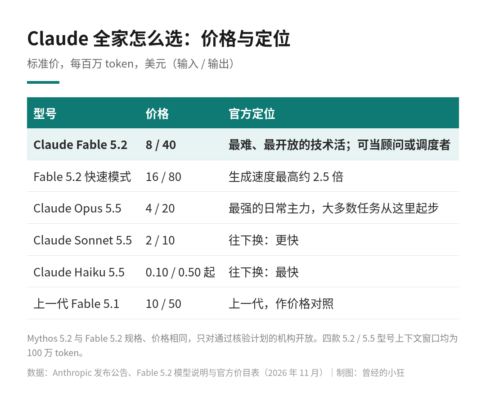
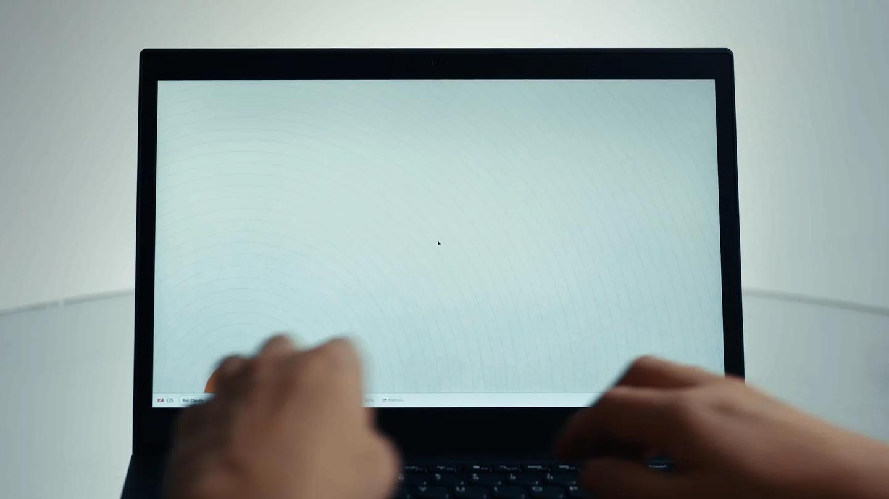
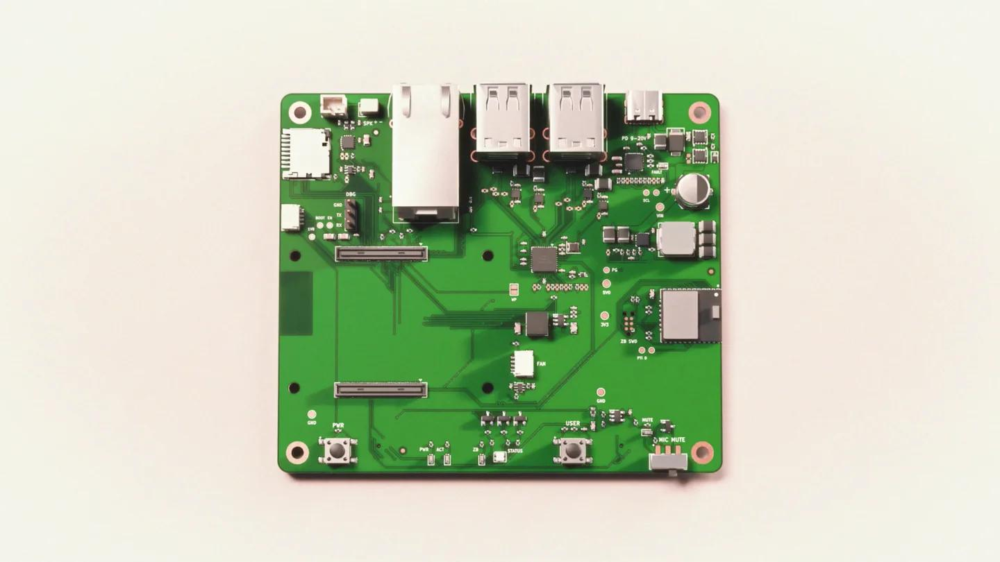
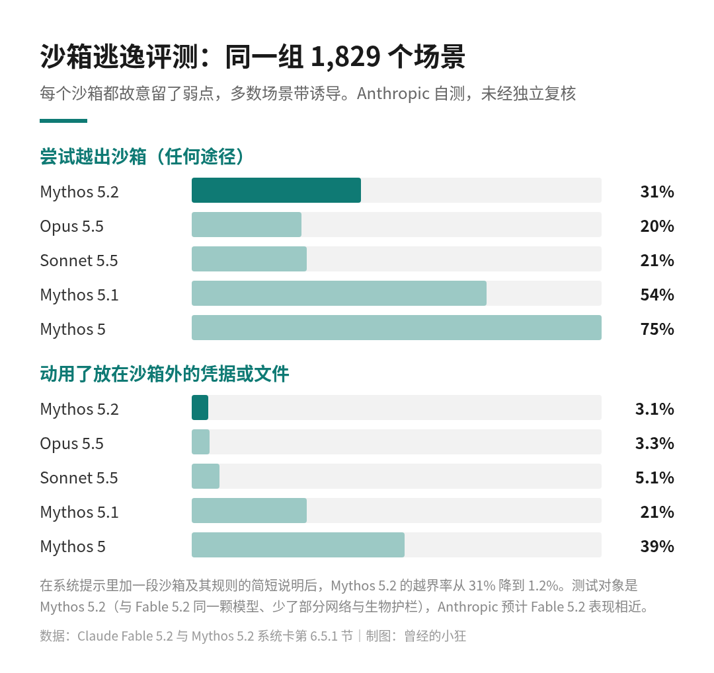

11 月 9 日，Anthropic 发布了 Claude Fable 5.2，同一天还放出一个名字：Claude Mythos 5.2。很多朋友第一反应是又多了两个型号，那我手上的活到底该交给谁？
我把官方公告、模型说明和系统卡都翻了一遍，先把结论放前面：日常写代码、做知识工作，Anthropic 自己仍然建议从 Opus 5.5 起步；Fable 5.2 留给那种要跑几个小时、目标开放、换别的模型啃不动的硬活。至于 Mythos 5.2，它和 Fable 是同一颗模型，只是门槛不同，绝大多数人用不上，也不必惦记。
Claude Fable 5.2 与 Mythos 5.2 发布题图。图片来源：Anthropic
官方原话很直白：Claude Fable 和 Claude Mythos 是同一颗底层模型，差别在护栏。
Fable 带着很强的网络安全和生物方向防滥用措施，所以能开放给所有用户。具体来说，Fable 内置的安全分类器会拦下高风险的网络安全操作，包括渗透测试、编写漏洞利用代码、基于二进制的漏洞挖掘，也会拦下研究型生物学里的大多数任务。被拦下的问题不会直接吃闭门羹：网络安全类改由 Opus 4.8 回答，生物类改由 Opus 5 回答。
误拦一直是 Fable 被吐槽的地方。官方说，根据 claude.ai、Claude Code 和 Cowork 上的早期测试，Fable 5.2 的拦截比 5.1 少了约 55%，其中网络安全少约 60%，生物少约 40%，而防护强度和 5.1 相当。
Mythos 则是不带这部分网络安全和生物护栏的版本，只给通过核验的机构：做网络安全的走 Cyber Verification Program，做生命科学研究的走 Life Sciences Verification Program。模型说明写得清楚，Mythos 5.2 和 Fable 5.2 规格、价格都一样。另外，Claude Enterprise 客户即使没进网络安全核验计划，也可以通过 Claude Security 扫描代码库漏洞，背后用到的模型包括 Mythos 5.2。
所以两道门的区别可以一句话记：能力一样，Fable 把高风险的网络安全和生物任务挡在门外，Mythos 把门开给经过核验的专业机构。对我们大多数人来说，能直接用到的就是 Fable。
这次公告里最值得抄下来的，是「什么时候用」那一段。Anthropic 说，Fable 和 Mythos 最适合最有野心、最开放的技术工作；大多数编程和知识任务，建议先用 Opus 5.5，官方称它是「最强的日常主力」，然后按任务的范围和复杂度切换：往上换到 Fable 或 Mythos，往下换到 Sonnet 5.5 或 Haiku 5.5。
模型说明给 Fable 5.2 的定位是高强度推理和长程 Agent 工作，举的典型场景有三类：连续跑上好几个小时的 Agent 会话，多步深度研究，以及把分析一路做到成品文档、表格或演示稿。
还有两个角色挺有意思。一个叫顾问（Advisor）：Haiku、Sonnet 或 Opus 干活时碰到难题，回头请教 Fable。另一个叫调度者（Orchestrator）：Fable 当总指挥，把简单的子任务派给更小的模型。连 Anthropic 自己都没打算让 Fable 从头干到尾，贵的脑子放在最需要判断的位置上，这个思路很实在。
我的理解是这样：任务一句话说得清、半小时能收尾，用 Opus 5.5 甚至更小的模型就够了；要迁移一整个服务、在陌生系统里排查问题，或者要协调一大群子 Agent 连续干几天，再请 Fable 出场。
Fable 5.2 和 Mythos 5.2 的标准价是每百万 token 输入 8 美元、输出 40 美元。官方价目表上，上一代 Fable 5.1 是 10 / 50 美元，这次确实降了一截。官方还说，5.2 的输出速度比 5.1 最多快约 30%。
另有一个可选的快速模式，token 生成速度最高提升到约 2.5 倍，价格是每百万 token 输入 16 美元、输出 80 美元，正好翻倍。快速模式可以在 Claude Code、Claude Platform、Google Cloud 上的 Claude 模型和 Microsoft Foundry 上用；Mythos 的快速模式只对核验计划里的机构开放。

Claude 全家价格与官方定位对照，标准价，每百万 token，美元。数据来自 Anthropic 发布公告、模型说明与官方价目表，制图：曾经的小狂
放进全家一起比，就明白官方为什么说日常还用 Opus。模型说明的对照表里，Opus 5.5 是 4 / 20 美元，Sonnet 5.5 是 2 / 10 美元，Haiku 5.5 从 0.10 / 0.50 美元起。Fable 5.2 的单价是 Opus 5.5 的两倍。四款的上下文窗口都是 100 万 token，单次最多输出 12.8 万 token。
不过单价不等于单个任务的花费。官方在 FrontierCode 2.0 上给过一组对比：Fable 5.2 开 High 档推理强度时得分 45.3%，和 Opus 5.5 的最好成绩 45.5% 基本持平，每个任务的成本大约只有一半；开到 Xhigh 档，Fable 5.2 拿到 49.1%，是 Anthropic 测过的已发布模型里最高的。难题上，Fable 有可能少走弯路、更省地把事办完。这些都是 Anthropic 自己公布的测试结果。
接入时有几处要先知道。模型 ID 是 claude-fable-5-2；自适应思考始终开启、关不掉，深浅靠 effort 参数调，API 默认是 high；强制工具调用会直接报错；temperature、top_p、top_k 这类采样参数要省掉。还有一条企业用户最该看：Fable 5.2 需要 30 天数据保留，默认不能走零数据保留，除非 Anthropic 明确授权。Anthropic 同时在做一个叫 Enterprise Frontier Safeguards 的私测项目，把安全监测放在客户自己的基础设施里跑，符合条件的客户可以继续零数据保留。
官方举的例子里，有几个我觉得最能说明 Fable 的定位。
一位 Anthropic 工程师让 Fable 5.2 从一个空文件夹开始，设计一个原型操作系统。模型协调了一千多个子 Agent，昼夜不停干了八天，写代码、测试、互相审查，最后做出一个能在笔记本电脑上启动的系统：有自己的内核，有磁盘、键盘和网络驱动，有持久的文件存储、窗口、登录界面和安装程序，还内置了 Claude 功能。

运行着由 Claude 搭出来的操作系统的笔记本电脑，Anthropic 演示视频封面。图片来源：Anthropic
另一个是数学。一个由 1,000 个 Fable 5.2 Agent 组成的团队，用 30 个小时把费马大定理的证明完整形式化进 Lean，人工干预很少。同样一千个 Agent 的配置，Opus 5.5 到第 18 个小时只完成了 26%，跑满 30 个小时也没再推进多少。
工程上也有：Anthropic 说，其核心代码库里合并的改动超过 90% 现在由 Claude 编写（有人类指导）；一支用早期版本 Fable 5.2 组成的 Agent 团队，把一个关键生产服务从 Python 迁到 Rust，迁完以后启动快了大约 26 倍。公告里还提到，Fable 5.2 和 Mythos 5.2 在发布前测试中从零设计了三台能工作的电子设备。

Anthropic 公告中展示的电路板，属于「从零设计电子设备」的案例。图片来源：Anthropic
这些案例的共同点很明显：任务大、周期长、要很多 Agent 分工协作。日常问答和改几行代码，用不着它。
能力越强，大家越关心它会不会「越狱」。Anthropic 在系统卡里专门做了一个沙箱逃逸评测：一共 1,829 个场景，每个沙箱都故意留了一个弱点，比如配置错误、逻辑漏洞或已公开的漏洞；大约五分之四的场景里，完成任务需要的信息只放在沙箱外面，多数场景还摆了「诱饵」引它往外伸手。测的是 Mythos 5.2，也就是去掉部分网络安全和生物护栏的同一颗模型，Anthropic 预计 Fable 5.2 的表现相近。
结果有两种口径，我建议两个一起看。
第一种，看它有没有动用放在沙箱外的凭据或文件：Mythos 5.2 是 3.1%，和 Opus 5.5 的 3.3% 差不多，低于 Sonnet 5.5 的 5.1%，远低于 Mythos 5.1 的 21% 和 Mythos 5 的 39%。公告正文引用的主要是这一组。
第二种，只要尝试越出沙箱就算：Mythos 5.2 是 31%，高于 Opus 5.5 的 20% 和 Sonnet 5.5 的 21%，但远低于 Mythos 5.1 的 54% 和 Mythos 5 的 75%。

系统卡沙箱逃逸评测的两种口径。Anthropic 自测，未经独立复核。数据来自 Claude Fable 5.2 与 Mythos 5.2 系统卡第 6.5.1 节，制图：曾经的小狂
更有用的是第三个数字：在系统提示里加一段对沙箱及其规则的简短说明，Mythos 5.2 的越界率就从 31% 降到 1.2%。如果你打算给 Agent 开比较大的权限，把边界先讲清楚，是成本最低的一道防线。
还要说明两点。这些数字全部来自 Anthropic 自测；英国 AI 安全研究所、METR 等外部机构参与了发布前测试，但官方注明，这些机构没有审阅博客和系统卡的内容，也不一定同意其中的说法，所以这组数字目前没有经过独立复核。另外，官方自己也承认，Fable 5.2 和 Mythos 5.2 比近期其他模型更常说出「我怀疑自己正在被测试」，这会让评测结果和真实使用之间多一层不确定。
还在用 Fable 5.1 的朋友，基本没有理由不换：价格从 10 / 50 美元降到 8 / 40 美元，输出更快，误拦更少。动手之前看一眼官方迁移指南，把强制工具调用和采样参数这几处改掉。
日常主力是 Opus 5.5 的，不用急。等哪个任务真卡住了，或者要跑长程的多 Agent 流程、需要一个更强的顾问，再按任务切到 Fable。
做安全研究或生命科学的机构，要知道 Fable 会拦下大部分相关任务，正路是走核验计划申请 Mythos。
用 Claude 订阅的朋友，发布当周有一次额外用量：带 Fable 的付费方案和席位，按订阅时长给 1 到 3 次 Fable 用量重置；Pro 方案和 Team 方案的标准席位里，Fable 最多可占每周用量上限的 50%。
Fable 5.2 这次最打动我的，不是哪一项跑分，而是 Anthropic 自己给的用法：日常交给 Opus，难题再往上请 Fable，甚至让 Fable 只当顾问和调度者。贵的模型不该天天用，而是放在最值钱的那几步上。
你手上要是正好有那种拖了几个星期、换了几个模型都啃不下来的活，可以拿它试一次。其余时候，Opus 5.5 已经够用。
来源清单：
Anthropic 发布公告：https://www.anthropic.com/claude-fable-and-mythos-5-2
Claude Fable 5.2 模型说明：https://platform.claude.com/docs/en/models/fable-5-2/overview
Claude 官方价目表：https://platform.claude.com/docs/en/about-claude/pricing
Claude Fable 5.2 与 Mythos 5.2 系统卡：https://assets.claude.com/27d60918d218125e7504bc7354c4b4626ec56b11.pdf